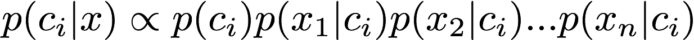

Bayes Classifier Practical¶
This practical will explore writing a Naive Bayes classifier in R.
Before you start¶
Running R studio¶
This practical uses R studio. Ensure that you can run R Studio.
Installing the packages¶
The practical will use a number of R packages. Before you use these packages you need to load them:
library(doBy)
library(ROCR)
library(ggplot2)
library(plyr)
- What do these packages do?
- doBy - used to produce data grouped by a feature.
- ROCR - used to produce receiver operator characteristic (ROC) curves
- ggplot2 - graph plotting
- plyr - tools for splitting, applying and combining data
If any of these packages fail to load then you can install them with the commands below. Please do not do this unless you have to as R does not check if they exist before downloading the packages and it will take a while to install them:
install.packages("doBy")
install.packages("ROCR")
install.packages("ggplot2")
install.packages("plyr")
Downloading the files¶
Download the practical R files and data using git:
git clone https://allyhume@bitbucket.org/allyhume/NaiveBayesClassifierPractical.git
The data set¶
The data set we will use for this practical is the Adult data set from the UCI Machine Learning Repository. This data set can be build a classifier that predicts if adult Americans have an annual salary of less than or equal to $50,000 (<=50K) or above $50,000 (>50K).
Look at the website for the Adult data set to understand it more. You will see that it has both continuous and categorical features. This practical will build a Naive Bayes classifier that uses both these types of features.
Set your R working directory to be the tutorial’s R directory:
setwd("/PATH/TO/NaiveBayesClassifierPractical/R")
The training and test data frames can be loaded using:
source("loadData.R")
The training data frame is called training and the test data frame is called test.
Use the summary function to see quick summary of the data:
summary(training)
You will notice that some of the data features are categorical and some are continuous.
Notice also that the salary class in the training set is heavily biased towards <=50K.
Spend a few minutes further understanding the data.
Naive Bayes Classifier¶
Recall that to implement a Naive Bayes Classifier we wish to use the following equation for each class to determine which class has highest probability of occurring given the feature data:
{kind=link}
So first we need to determine the a priori probability of each class occurring. Assuming our
training set is representative then this is easily done. The table function in
R will be useful here:
table(training[["salary"]])
- What is the a priori probability of class ‘<=50’?
- What is the a priori probability of class ‘>50K’?
Next we need to consider the feature data. Let’s start with the education feature. Again
we can use R’s table function to obtain the data we need:
table(training[["education"]], training[["salary"]])
This is the data we need to compute the probability of seeing the various feature values for each class.
Look at the code in classifier1.R and complete the function so that it uses the education feature value when computing the score for each class.
Test the function to ensure it produces the following results for training set instances 1 and 6:
> source('classifier1.R')
> classifier1(training[1,], printScores=TRUE)
[1] "<=50K: 0.0962501151684531 >50K: 0.0682104357974264"
[1] <=50K
Levels: <=50K >50K
> classifier1(training[6,], printScores=TRUE)
[1] "<=50K: 0.0234636528362151 >50K: 0.0294524123951967"
[1] >50K
Levels: <=50K >50K
Now we can apply the classifier to the whole test set and analyse the result:
> predictions <- apply(test, 1, classifier1)
> table(predictions, test[,"salary"], dnn=list("predicted", "actual"))
actual
predicted <=50K >50K
<=50K 11881 3027
>50K 554 819
Here we have applied the classifier to all the test examples and produced a confusion matrix.
If we consider >50K to the positive then the true positive rate is 819/(3027+819) = 21.3% and the false positive rate is 554/(11881+554) = 4.5%. This seems a very low true positive rate. Maybe using more features will improve matters.
Edit the classifier1 function to that it now includes the workclass feature. When completed you
should see the following values for instances 1 and 6:
> source('classifier1.R')
> classifier1(training[1,], printScores=TRUE)
[1] "<=50K: 0.00394177069703957 >50K: 0.0031474880832015"
[1] <=50K
Levels: <=50K >50K
> classifier1(training[6,], printScores=TRUE)
[1] "<=50K: 0.0180316773887152 >50K: 0.0191074931656681"
[1] >50K
Levels: <=50K >50K
Now applying this to the whole test set gives:
> predictions <- apply(test, 1, classifier1)
> table(predictions, test[,"salary"], dnn=list("predicted", "actual"))
actual
predicted <=50K >50K
<=50K 11764 2854
>50K 671 992
Is this better? We have more true positives (992 compared with 819) but we also have more false positives (671 compared with 554). Our true positive rate is now 25.8% and our false positive rate is now 5.4%. It is hard to tell if this is really any better.
ROC Curves¶
Choosing the best classifier requires considering a trade-off between between the true positive rate and the false positive rate. Our trained classifier has given as a single pair of true positive and false positive rates (TPR=25.8%, FPR=5.4%) but in fact it can support many other rate pairs if we simply adjust our sensitivity to predicting high salaries. We can adjust the rate simply by adding a weight to the score for high salaries. Let’s add a weight of 2.0 to high salaries. This should result in more true positives at the expense of more false positives.
Add a weight of 2.0 to the high salary score and see how well the classifier works now. The true positive rate should now be 53.4% with a false positive rate of 18.8%.
If we adjust the weight for high salary we can get get a whole range of true positive rates for 0.0 to 1.0 (100%). If we alter our classifier code to return the ratio of high salary score to low salary score then we can easily adjust the weighting after we have applied the score all our training examples:
- Make of copy of your classifier1.R file and call it classifier2.R
- Remove any code you added to adjust the weight for the high salaries.
- Change the name of the function from
classifier1toclassifier2.- Change the function to return
highSalaryScore/lowSalaryScore
Now the threshold can be altered effectively adjust the weighting for a high salary. If the threshold is 1.0 we get the same results are before:
> source('classifier2.R')
> ratios <- apply(test, 1, classifier2)
> predictions <- sapply(ratios, function(x) { if (x >= 1.0) gt50K else lt50K})
> table(predictions, test[,"salary"], dnn=list("predicted", "actual"))
actual
predicted <=50K >50K
<=50K 11764 2854
>50K 671 992
But if we set a lower threshold then we effectively increase the weight of the high salary class. Setting a threshold of 0.5 is equivalent to a high salary weighting of 2.0:
> predictions <- sapply(ratios, function(x) { if (x >= 0.5) gt50K else lt50K})
> table(predictions, test[,"salary"], dnn=list("predicted", "actual"))
actual
predicted <=50K >50K
<=50K 10100 1792
>50K 2335 2054
Graphs showing all the possible true positive and false positive rate combinations are known as receiver operating characteristic (ROC) curves. They always start in the bottom left corner (TPR=FPR=0) and end in the top right corner (TPR=FTP=1.0). Typically the closer the curve gets to the top left corner the better.
The RCOC library includes functions to draw ROC curves. Use these to draw a ROC curve for our classifier using the library’s prediction and performance functions:
> library(ROCR)
> ratios <- apply(test, 1, classifier2)
> pred <- prediction(ratios, test["salary"])
> perf <- performance(pred,"tpr","fpr")
> plot(perf)
This curve should contain the TPR and FPR pairs identified above. Use R’s
abline function to draw lines for the known TPR and FPR rates to ensure
the intersect on the ROC curve. Use ?abline to view the documentation
for the abline function. You will wish to use the v and h parameters
when calling abline.
The area under the ROC curve is a useful single measure of the of how
good the classifier is. The performance function can be used to return
the area under the curve:
> performance(pred,"auc")@y.values
[[1]]
[1] 0.7247961
So the area under the ROC curve for a Naive Bayes classifier using just the education and workclass features is 0.72.
Adding continuous features¶
For categorical features such as the ones we have used so we can determine the required probability models simply by counting. This approach does not work for continuous data. For continuous data we must model the data using a appropriate distribution. Consider the age data in our data set. We can plot the density histogram of this feature for the low and high salary groups using the drawAgeHistograms.R script:
> source('drawAgeHistograms.R')
You can see that there is a clear difference between the two groups although there is significant overlap.
We wish to model this distributions using the normal distribution (also called the Gaussian distribution). The normal distribution is specified by two parameters: mean and standard deviation.
Using the doBy library’s summaryBy function we can easily calculate the mean
and standard deviation for the two groups:
> library(doBy)
> summaryBy(age~salary,data=training,FUN=c(mean,sd))
To see how well the normal distributions match the data we can plot them on top of the data:
> source('drawAgeHistogramsWithNormalModels.R')
The normal model fits well for the high salary group but is less good a fit for the low salary group. Nonetheless we will carry on with these values and add the age feature into our classifier.
- Adjust your classifier to use the age feature:
Use the
dnormfunction for the normal probability density function- You may have to use the
as.numericfunction to convert the age to a number: age <- as.numeric(x[["age"]])
- You may have to use the
Do not worry about storing the results from the
summaryByfunction and indexing them in your code. Feel free to keep things simple and type the mean and standard deviation numbers into your code for this exercise.
Applying your classifier to the test set should produce the following confusion matrix:
> source('classifier2.R')
> ratios <- apply(test, 1, classifier2)
> predictions <- sapply(ratios, function(x) { if (x >= 1.0) gt50K else lt50K})
> table(predictions, test[,"salary"], dnn=list("predicted", "actual"))
actual
predicted <=50K >50K
<=50K 11555 2523
>50K 880 1323
Re-plot the ROC curve for the new classifier. Does it look better? What is the area under the curve now.
Optional additional work¶
Add more features to your Naive Bayes classifier. Adding categorical features education number, marital status, occupation, relationship, race, sex and native country increases the area under the ROC curve to 0.88.
If you get subscript out of bounds errors when accessing the table for
education number it could be because R is strangely adding white space. Trying
using the following function to trim the white space:
trim <- function( x ) {
gsub("(^[[:space:]]+|[[:space:]]+$)", "", x)
}
Then read the value for education number as using:
f <- trim(x[["education.num"]])
Of the remaining continuous features only fnlwgt fits well onto the normal distribution but it seems to have little difference between the low and high salary cases.